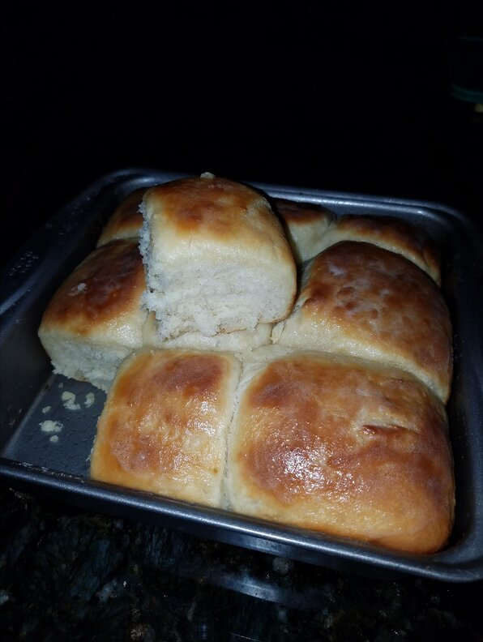

Quick yeast rolls recipe

Description
This easy yeast roll recipe was given to me by my Great, Great Grandmother. I used it a couple of years ago in our state fair and received first place.
Ingridients
- 2 tablespoons shortening
- 3 tablespoons white sugar
- 1 cup hot water
- 1 (.25 ounce) package active dry yeast
- 1 egg, beaten
- 1 teaspoon salt
- 2 ¼ cups all-purpose flour
Steps:
- In a large bowl, mix the shortening, sugar, and hot water. Allow to cool until lukewarm, and mix in the yeast until dissolved. Mix in the egg, salt, and flour. Allow the dough to rise until doubled in size.
- Grease 8 muffin cups. Divide the dough into the prepared muffin cups, and allow to rise again until doubled in size.
- Preheat oven to 425 degrees F (220 degrees C).
- Bake for 10 minutes in the preheated oven, or until a knife inserted in the center of a muffin comes out clean.